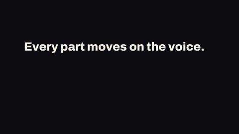
Blur reveal
fx:blur-reveal
Text rises 16 px out of a soft blur and fades in on a calm spring with no overshoot; the default reveal for a title or a line.
FX.blurReveal(H, el, {at, dur = 0.7, by: null|'words'|'chars', stagger = 0.06, blur = 10, rise = 16}): el appears at `at`returns {el, parts}
Modern demo · HyperFrames demo · from onda
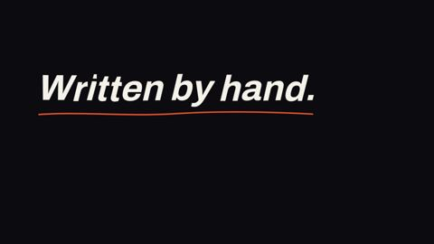
Handwriting text
fx:handwriting-text
Writes a line of text on letter by letter, left to right, with a pen dot on the wet edge and an optional hand-drawn underline; use it for a personal note, a title or a signature feel.
FX.handwritingText(H, el, {at, perChar = 0.07, dur = chars * perChar, wobble = 1.4, pen = 0.1, penColor: 'accent', seed = 1, underline = false, lineColor: 'accent', lineDur = 0.5}): the text of el is written on from `at`; pen is the dot size in em (0 hides it)returns {el, parts, end}: end is the time the last stroke ends
Modern demo · HyperFrames demo · from remotionui
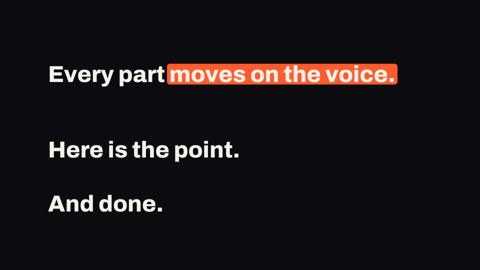
Marker highlight
fx:marker-highlight
A highlighter stroke sweeps word by word across a phrase, as marker, knockout, underline or box; use it to stress the key words of a line.
FX.markerHighlight(H, el, {at, phrase = null (all words), variant = 'marker'|'knockout'|'underline'|'box', dur = 0.45, stagger = 0.16, softness = 12, markerColor = 'accent' ('ink' for knockout), flipColor = 'cream', text = el.textContent}): the first word is marked from `at`returns {el, words, end}
Modern demo · HyperFrames demo · from remotionui
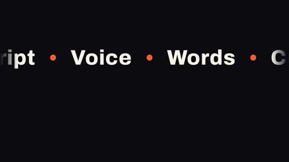
Marquee
fx:marquee
A seamless band of words that scrolls sideways at a steady speed, with an accent dot between words; use it for a ticker row or a list of topics behind the voice.
FX.marquee(H, el, {at, to, items = words of el, speed = 120, direction: 'left'|'right' = 'left', gap = 96, size = 96, dots = true, color: 'ink', dur = 0.5}): fills el with a clipped, scrolling band; speed in px per secondreturns {el, track}
Modern demo · HyperFrames demo · from onda
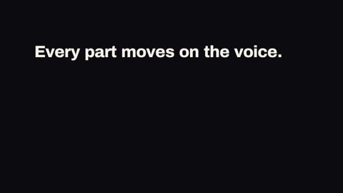
Masked slide reveal
fx:masked-slide-reveal
Words or lines slide up out of a line mask one after another; use it for a headline that builds word by word.
FX.maskedSlideReveal(H, el, {at, dur = 0.55, stagger = 0.09, lines: null|[...], by: 'words'|'lines', align = 'center', gap = 0.28, text = el.textContent}): the items slide in from `at`returns {el, parts, end}
Modern demo · HyperFrames demo · from remotionui
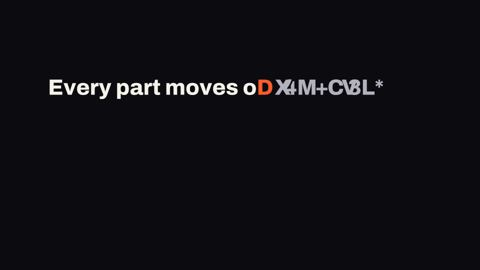
Matrix decode
fx:matrix-decode
Random glyphs resolve from left to right into the real text, with one accent character on the decode front; use it for a data, code or reveal moment.
FX.matrixDecode(H, el, {at, dur = 1.0, rate = 24, jitter = 2, glyphs = letters and digits, seed = 'matrix-decode', color = 'ink', hotColor = 'accent', scrambleColor = 'dim', text = el.textContent}): the text appears at `at` as a scramble and is clean at `at + dur`returns {el, parts, end}
Modern demo · HyperFrames demo · from remotionui
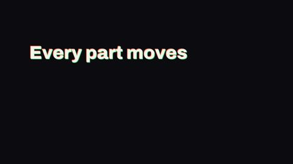
Rgb glitch text
fx:rgb-glitch-text
Two colour copies ride just off the text and burst wider now and then, then the text settles clean; a short high-energy hit for a title.
FX.rgbGlitchText(H, el, {at, dur = 2.4, split = 0.02, intensity = 0.07, period = 0.8, burst = 0.2, rate = 12, seed = 7, color = 'ink', colorA = 'accent', colorB = 'green', text = el.textContent}): the text snaps in at `at`, the glitch ends at `at + dur`returns {el, end}
Modern demo · HyperFrames demo · from onda
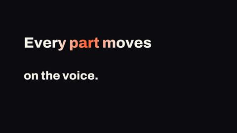
Shimmer sweep
fx:shimmer-sweep
A single band of accent colour sweeps once (or a few times) across the text without moving the layout; a restrained emphasis for a key phrase.
FX.shimmerSweep(H, el, {at, dur = 0.9, repeat = 1, interval = 1.6, color = 'ink', shimmerColor = 'accent', angle = 100, text = el.textContent}): the first sweep runs from `at` to `at + dur`returns {el, text, end}
Modern demo · HyperFrames demo · from onda
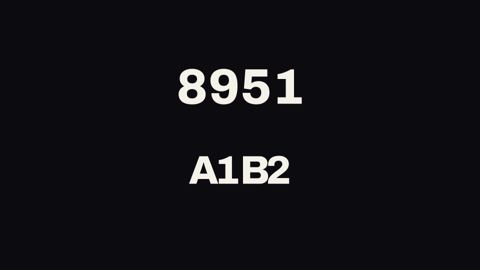
Slot roll
fx:slot-roll
Each character spins through a reel of glyphs and lands on the new character, column by column; use it for a number or a code that changes.
FX.slotRoll(H, el, {at, from = el.textContent, to = from, dur = 1.0, stagger = 0.08, spins = 2, cell = 0.64, glyphs = digits (or letters and digits), color = 'ink'}): the roll runs from `at` to `at + dur`returns {el, cells, end}
Modern demo · HyperFrames demo · from remotionui
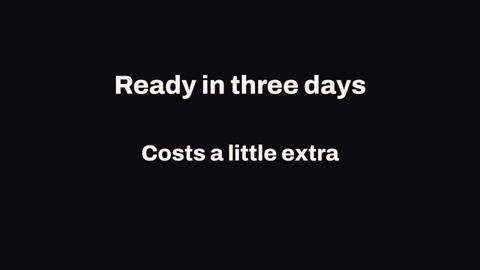
Strikethrough replace
fx:strikethrough-replace
A line strikes out one phrase, holds a beat, then a new phrase replaces it in a single frame (cut K10); use it for a correction or a before and after.
FX.strikethroughReplace(H, el, {at, to, from = el.textContent, strike = 0.3, hold = 0.35, align = 'center'|'left'|'right', strikeColor = 'accent', replaceColor = 'ink', weight = 0.07, height = 0.56, tilt = -0.6}): strike starts at `at`, swap at `at + strike + hold`returns {el, swap, end}
Modern demo · HyperFrames demo · from remotionui
Stroke to fill text
fx:stroke-to-fill-text
Letters appear as an outline and then a solid fill floods each letter from the bottom up; use it for a bold title with a build-up.
FX.strokeToFillText(H, el, {at, by = 'chars'|'words'|'whole', stagger = 0.04, outlineDur = 0.35, fillDelay = 0.4, fillDur = 0.6, direction = 'up'|'down'|'left'|'right', strokeWidth = 3, retain = 0.35, softness = 14, strokeColor = 'ink', fillColor = 'ink', text = el.textContent}): outline at `at`, fill after `fillDelay`returns {el, parts, end}
Modern demo · HyperFrames demo · from remotionui
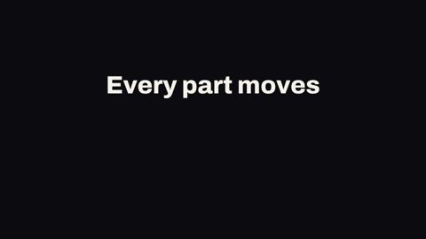
Tracking in
fx:tracking-in
Wide letter-spacing collapses to normal while the line sharpens out of a light blur on a calm spring; use it for a title that lands.
FX.trackingIn(H, el, {at, dur = 0.8, from = 0.28, blur = 6, bounce = 0}): el appears at `at`; `from` is the start spacing in emreturns {el, end}
Modern demo · HyperFrames demo · from remotionui
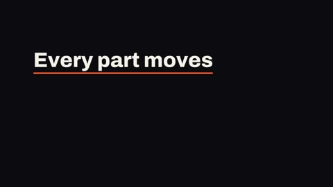
Underline
fx:underline
The text snaps in, then an accent line draws under it after a short beat; a two-step emphasis for one key phrase.
FX.underline(H, el, {at, dur = 0.25, lineDelay = 0.3, lineDur = 0.5, rise = 24, lineColor = 'accent', thickness = 0.08, offset = 0.04, text = el.textContent}): text at `at`, line from `at + lineDelay`returns {el, text, line, end}
Modern demo · HyperFrames demo · from onda
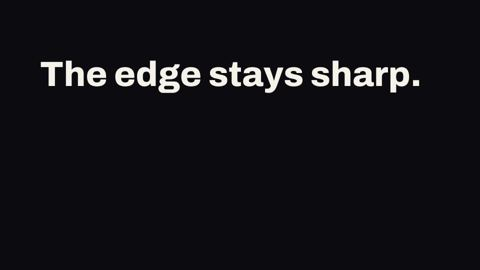
Mask reveal
fx:mask-reveal
Text is uncovered by a mask that slides away with a hard, sharp edge and no fade; use it for a title that should arrive with authority.
FX.maskReveal(H, el, {at, dur = 0.7, direction: 'left'|'right'|'top'|'bottom' = 'left'}): el is uncovered from `at`returns {el, at, dur}
Modern demo · HyperFrames demo · from onda
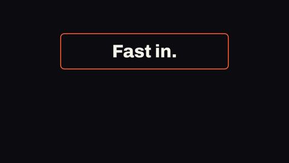
Motion trail
fx:motion-trail
An element flies in from the side and leaves a trail of fading, blurred echoes behind it; use it for a fast, energetic arrival.
FX.motionTrail(H, el, {at, dur = 0.9, x = -520, y = 0, count = 5, gap = 0.06, opacity = 0.45, falloff = 1.6, scale = 0.82, blur = 4, ease = 'power3.out', color: null}): el flies in from (x, y) px away at `at`returns {el, echoes, end}
Modern demo · HyperFrames demo · from remotionui
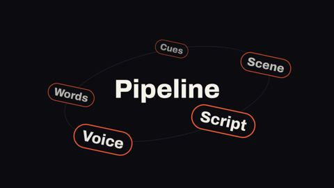
Ormotion
fx:orbit-motion
The children of an element travel round a tilted ellipse with depth (bigger and brighter in front); use it for a set of items around a central idea.
FX.orbitMotion(H, el, {at, to, radiusX = 520, radiusY = 190, period = 8, phase = 0, tilt = -12, direction: 'cw'|'ccw' = 'cw', centerX = 50, centerY = 50, depth = 0.28, depthFade = 0.4, upright = true, showPath = false, enter = 0.7, stagger = 0.1}): children of el orbit from `at` to `to`returns {el, items}
Modern demo · HyperFrames demo · from remotionui
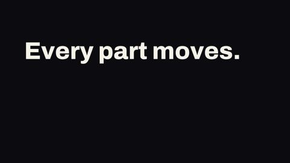
Rotate in
fx:rotate-in
Text settles from a slight tilt (default -8 degrees) to straight while it fades in, on a calm spring with no overshoot; use it for a title or a line.
FX.rotateIn(H, el, {at, dur = 0.7, angle = -8, origin = '50% 50%', by: null|'words'|'chars', stagger = 0.08}): el appears at `at`; angle is clamped to -12..12returns {el, parts}
Modern demo · HyperFrames demo · from onda
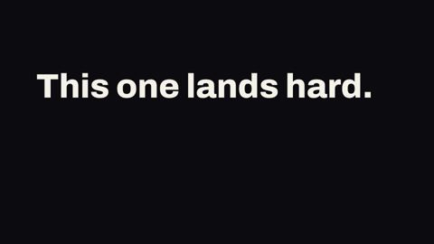
Shake emphasis
fx:shake-emphasis
A short impact shake that dies away, with a small squash on the hit; use it on a word or card on the beat the voice stresses.
FX.shakeEmphasis(H, el, {at, dur = 0.6, intensity = 14, rotation = 1.4, punch = 0.05, frequency = 22, axis: 'both'|'x'|'y' = 'both', decay = 2.2, repeat = 1, every = dur + 0.6, seed = 1}): el shakes from `at`returns {el, at, end}
Modern demo · HyperFrames demo · from remotionui
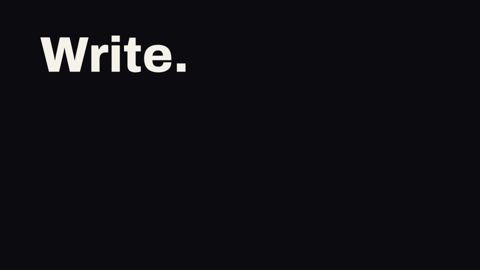
Skew in
fx:skew-in
An element slides in sideways while leaning, then stands up straight; an editorial entrance for a headline or a panel.
FX.skewIn(H, el, {at, dur = 0.6, skew = 14, skewY = 0, travel = 56, direction: 'left'|'right' = 'left', origin = '0% 100%'}): el appears at `at`returns {el, at, dur}
Modern demo · HyperFrames demo · from remotionui
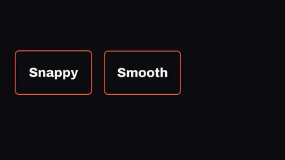
Spring in
fx:spring-in
An element scales up a little and rises into place on a spring, with snappy, smooth and bouncy presets; use it for a card, a label or any block that arrives.
FX.springIn(H, el, {at, config: 'snappy'|'smooth'|'bouncy' = 'snappy', from = 0.88, travel = 24, direction: 'up'|'down'|'left'|'right' = 'up', origin = '50% 50%', dur = by preset, bounce = by preset}): el appears at `at`returns {el, at, dur}
Modern demo · HyperFrames demo · from remotionui
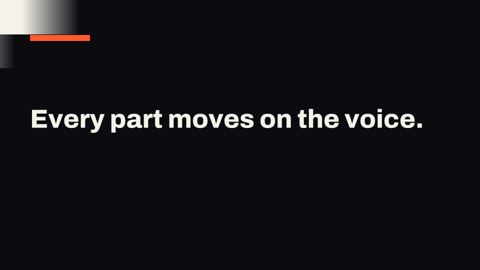
Blinds
fx:blinds
Slats open one after the other, each sweeping sideways or down, and show the next full-frame shot; use it for a rhythmic, graphic scene change (cut K5 variant).
FX.blinds(H, from, to, {at, dur = 0.6, slats = 8, orientation = 'horizontal'|'vertical', stagger = 0.5, alternate = false, soft = 0.12}): from is shot A, to is shot B, both full-frame on one stage; the slats open from `at` to `at + dur`slats is 2-48; horizontal slats stack top to bottom and sweep sideways, vertical slats stand side by side and sweep down; stagger is the share of dur that the start of the last slat is late; alternate turns every second slat the other way; soft is the soft edge as a share of the sweepreturns {end, slats}
Modern demo · HyperFrames demo · from remotionui
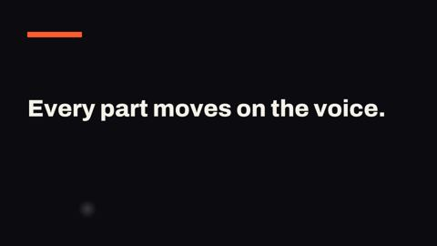
Circle reveal
fx:circle-reveal
A round hole opens from any point of the frame and shows the next full-frame shot, led by a strip of its ground colour; use it for a clean, deliberate scene change (cut K5).
FX.circleReveal(H, from, to, {at, dur = 0.58, x = 0.5, y = 0.5, soft = 0.12, lag = 0.2, push = 1.04, ground = null|role|false}): from is shot A, to is shot B, both full-frame on one stage; the circle opens from `at` to `at + dur`x and y are the centre of the circle as a share of the frame; soft is the soft edge as a share of the radius; lag is how far B trails the strip (share of dur); push is the scale A leans to under the hole (1 = still); ground is a colour role for the strip (default: the background B already has, false = no strip)returns {panel, end}: the strip element and the end time
Modern demo · HyperFrames demo · from remotionui
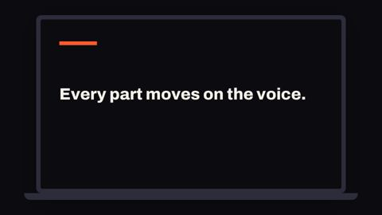
Device pullback
fx:device-pullback
The outgoing shot starts at about 3x, pulls back slowly, then snaps in one frame into a laptop or phone frame; use it for the beat 'this is inside the real product' (cut K6).
FX.devicePullback(H, from, to, {at, dur = 1, hold = 0.6, device = 'laptop'|'phone', start = 3, ratio = 0.56, focus = [0.5, 0.5], frame = 'line', ground = 'cream'}): from is shot A (the product screen), to is shot B, both full-frame on one stage; the pull-back runs from `at` to `at + dur`, the snap is at `at + dur`, the cut to B at `at + dur + hold`start is the scale A starts at; ratio is the scale change of the last step (K6: about 0.56); focus is the point of A that sits in the middle at the start, as a share of the frame; frame and ground are colour roles for the device and the ground around itreturns {wrap, snap, cut}: the device element and the two times
Modern demo · HyperFrames demo · from onda
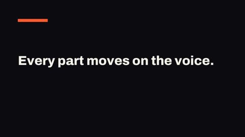
Expand morph
fx:expand-morph
A rounded card of the next shot grows from a small origin rect to the full frame while the old shot leans back; use it when a box, input or list becomes its result (cut K3).
FX.expandMorph(H, from, to, {at, lead = 0.14, dur = 0.8, shrink = 0.09, origin = [0.36, 0.34, 0.28, 0.32], radius = 28}): from is shot A, to is shot B, both full-frame on one stage; A leans back from `at`, the card starts at `at + lead` and is full at `at + lead + dur`lead is the length of A's anticipation in s; shrink is how much A shrinks (K3: about 0.09); origin is the start rect of the card as [x, y, width, height] shares of the frame; radius is the corner radius in px at the start (it goes to 0)returns {shadow, cut, end}: the shadow element, the time the card starts and the end time
Modern demo · HyperFrames demo · from onda
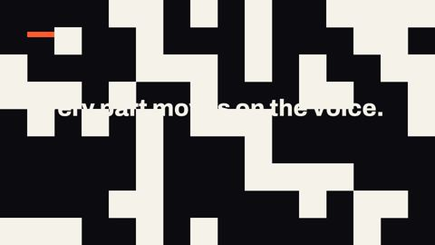
Grid pixelate
fx:grid-pixelate
Square cells of the next shot's ground colour fill the frame in a seeded scatter, the shots swap under them, then the cells clear; a retro, high-energy cut between two scenes (cut K5 variant).
FX.gridPixelate(H, from, to, {at, dur = 0.6, cols = 16, rows = cols * height / width, seed = 1, accent = 0, ground = null|role}): from is shot A, to is shot B, both full-frame on one stage; the cells run from `at` to `at + dur`, the shots swap at `at + dur / 2`cols and rows are 2-64; seed sets the scatter (same seed, same order); accent is the share of cells painted in the accent colour (0-1); ground is a colour role for the cells (default: the background B already has)returns {canvas, end}
Modern demo · HyperFrames demo · from onda
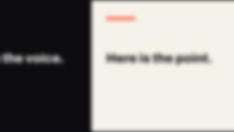
Whip pan
fx:whip-pan
Both full-frame shots slide along one axis in about eight frames with a motion blur that follows the speed; use it to move between two parts of one screen or two screens on one ground (cut K7).
FX.whipPan(H, from, to, {at, dur = 8/30, dir = 'left'|'right'|'up'|'down', blur = 20, punch = 2.2, travel = 1}): from is shot A, to is shot B, both full-frame on one stage; the pan runs from `at` to `at + dur`dir is the way the content moves (left = B arrives from the right); blur is the peak blur in px at the fastest point; punch (1-4) is how hard the move is squeezed into a few frames; travel is the share of the frame each shot moves (1 = edge to edge)returns {end}
Modern demo · HyperFrames demo · from remotionui
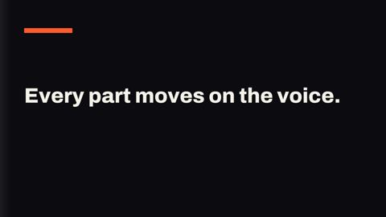
Wipe
fx:wipe
A soft-edged wipe from one full-frame shot to the next, painted in the next shot's ground colour; use it between two busy scenes (cut K5).
FX.wipe(H, from, to, {at, dur = 0.58, dir = 'right'|'left'|'up'|'down', soft = 0.36, lag = 0.28, ground = null|role|false}): from is shot A, to is shot B, both full-frame on one stage; the wipe runs from `at` to `at + dur`dir is the way the edge travels; soft is the soft edge as a share of the axis (K5: 0.31-0.42); ground is a colour role for the strip (default: the background B already has, false = no strip); lag is how far B trails the strip (share of dur)returns {panel, end}: the strip element and the end time
Modern demo · HyperFrames demo · from onda
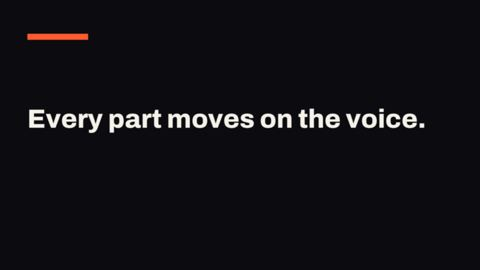
Zoom through
fx:zoom-through
The old shot pushes past the lens and blurs, a hard cut lands, and the new shot settles out of the same push from blur to sharp; use it when the video already uses blur (cut K4).
FX.zoomThrough(H, from, to, {at, out = 0.2, dur = 0.5, blur = 18, outScale = 1.2, inScale = 0.75}): from is shot A, to is shot B, both full-frame on one stage; A exits from `at`, the cut is at `at + out`, B settles over `dur`out is the length of A's exit in s; dur is the length of B's arrival in s; blur is the blur in px at the cut (motion.md: 10 for objects, 18-20 for full-frame surfaces); outScale is A's end scale; inScale is B's start scalereturns {cut, end}: the cut time and the time B is at rest
Modern demo · HyperFrames demo · from remotionui
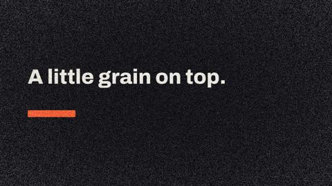
Animated noise grain
fx:animated-noise-grain
Film grain laid over the whole frame on a canvas; the pattern changes every second frame and is the same on every seek. Use it to take the clean digital look off a scene.
FX.animatedNoiseGrain(H, root, {from = 0, to, opacity = 0.14, size = 2, hold = 2, fps = 30, vignette = 0.6, seed = 1}): canvas over the content of root, drawn from `from` to `to` (default: the end of the video)returns {canvas}
Modern demo · HyperFrames demo · from remotionui
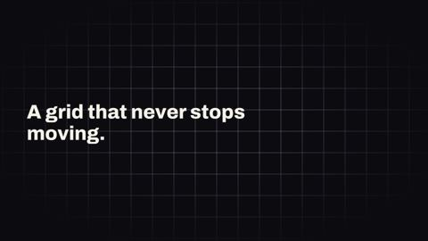
Dynamic grid
fx:dynamic-grid
A technical grid of lines or dots drifts diagonally and loops by one cell; a calm full-frame backdrop for data, dev and dashboard scenes.
FX.dynamicGrid(H, root, {from = 0, to, cell = 96, speed = 36, angle = 45, variant = 'lines'|'dots', color = 'dim', opacity = 0.5, fade = true, glow = 0}): a grid as the first child of root, drawn from `from` to `to` (default: the end of the video)cell is the size of one cell in stage px; speed is the drift in px per second; angle is the drift direction in degrees (0 = right, 90 = down); color is a brand colour role; fade softens the edges of the frame; glow (0-1) adds an accent light in the middlereturns {el}
Modern demo · HyperFrames demo · from onda
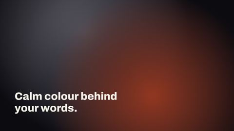
Mesh gradient
fx:mesh-gradient
Soft blobs of brand colour drift slowly behind a scene; a quiet atmosphere layer for a full-frame backdrop, never the subject.
FX.meshGradient(H, root, {from = 0, to, colors = ['accent', 'line', 'dim'], speed = 1, size = 0.45, opacity = 0.5, background = null, seed = 1}): a backdrop as the first child of root, drawn from `from` to `to` (default: the end of the video)colors is a list of brand colour roles, one blob each; size is the blob radius as a share of the stage width; speed 1 is one slow lap in about 16 s; opacity is the strength of the blobs (keep it low); background is an optional colour role painted under the blobs; seed sets the places and phasesreturns {el}
Modern demo · HyperFrames demo · from onda
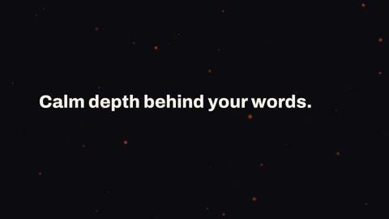
Particle field
fx:particle-field
Glowing dots drift across the frame with depth: near dots are bigger, faster and brighter. A calm backdrop under a whole scene.
FX.particleField(H, root, {from = 0, to, color: 'accent', count = 70, angle = 8, speed = 1, size = 14, minSize = 2, drift = 4, glow = 1.6, intensity = 1, seed = 1}): canvas behind the content of rootreturns {canvas}
Modern demo · HyperFrames demo · from remotionui
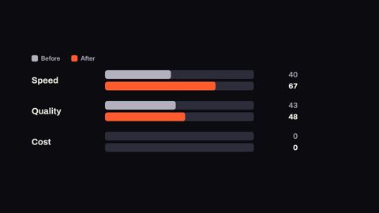
Comparison bars
fx:comparison-bars
Rows of two bars, a muted before and a coloured after, that grow in turn with counting numbers and a change chip; use it for a before/after or old/new comparison.
FX.comparisonBars(H, el, {at, dur = 1.0, rows: [{label, before, after, delta?}] (3 sample rows), seriesLabels = ['Before', 'After'], stagger = 0.3, pairOffset = 0.18, unit = '', decimals = 0, showDelta = true, width = 1600, barHeight = 44, rowGap = 54, labelWidth = 340, valueWidth = 190, deltaWidth = 220, beforeColor: 'dim', afterColor: 'accent', upColor: 'green', downColor: 'accent'}): builds the legend and rows inside el; each bar grows over `dur` seconds, row i starts `i * stagger` after `at`returns {el, root, rows}
Modern demo · HyperFrames demo · from remotionui
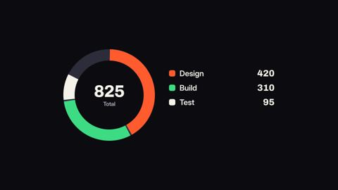
Donut chart
fx:donut-chart
A multi-segment donut whose slices sweep on clockwise one after another while the total counts in the hole and a legend lists each part; use it to show how a whole splits.
FX.donutChart(H, el, {at, dur = 1.8, segments: [{label, value, color?}] (4 sample parts), totalLabel = '', unit = '', decimals = 0, size = 520, thickness = 64, gap = 8, width = 1200, trackColor: 'line'}): builds the ring and the legend inside el; the sweep runs `dur` seconds from `at`returns {el, root, total, legend}
Modern demo · HyperFrames demo · from remotionui
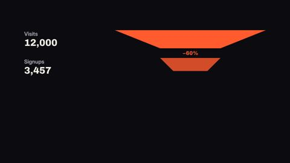
Funnel chart
fx:funnel-chart
Stage bands wipe in from the top and narrow toward the bottom, with counting numbers and the drop-off percent between bands; use it for a conversion or a step-by-step loss.
FX.funnelChart(H, el, {at, dur = 0.8, stages: [{label, value}] (4 sample stages), stagger = 0.45, unit = '', decimals = 0, showDropoff = true, tailOpacity = 0.45, width = 1600, bandHeight = 120, gap = 64, labelWidth = 560, color: 'accent', dropColor: 'accent'}): builds the funnel inside el; band i wipes over `dur` seconds, starting `i * stagger` after `at`returns {el, root, items}
Modern demo · HyperFrames demo · from remotionui
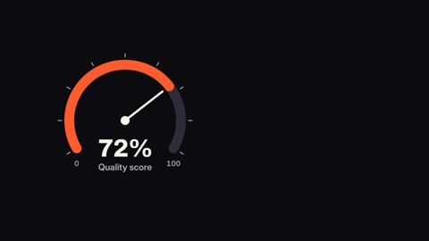
Gauge dial
fx:gauge-dial
A dial arc fills and a needle sweeps to a target while the readout counts up under it; use it for one score, rate or level against a known range.
FX.gaugeDial(H, el, {at, dur = 1.6, value = 72, min = 0, max = 100, label = '', unit = '%', decimals = 0, size = 640, thickness = 44, sweep = 240, tickCount = 9, showRange = true, color: 'accent', trackColor: 'line'}): builds the dial inside el; the needle sweeps over `dur` seconds from `at`returns {el, root, value}
Modern demo · HyperFrames demo · from remotionui
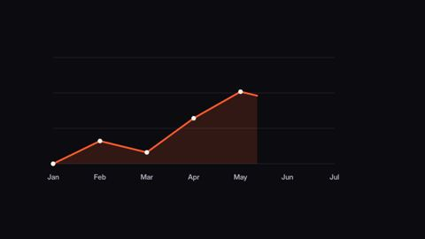
Line chart
fx:line-chart
A line draws on left to right over a soft area with dots that pop as the line reaches them and the last value shown at its end; use it for one trend over time.
FX.lineChart(H, el, {at, dur = 2.0, values: [numbers] (7 sample values), labels: null|[text per point], labelEvery = 1, unit = '', decimals = 0, zero = false, fill = true, showDots = true, strokeWidth = 8, width = 1500, height = 560, valueGutter = 200, color: 'accent'}): builds the chart inside el; the line draws over `dur` seconds from `at`returns {el, root, last}
Modern demo · HyperFrames demo · from onda
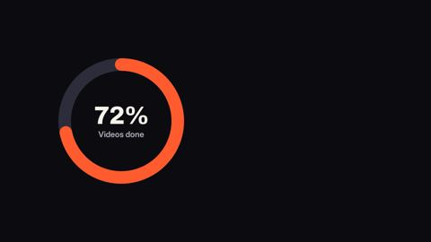
Pie reveal
fx:pie-reveal
A single ring fills clockwise from 12 o'clock to a percent while the big number in its middle counts up; use it for one share or score.
FX.pieReveal(H, el, {at, dur = 1.4, value = 72, max = 100, label = '', suffix = '%', decimals = 0, size = 560, thickness = 56, color: 'accent', trackColor: 'line'}): builds the ring inside el; it fills over `dur` seconds from `at`returns {el, root, value, label, arc}
Modern demo · HyperFrames demo · from onda
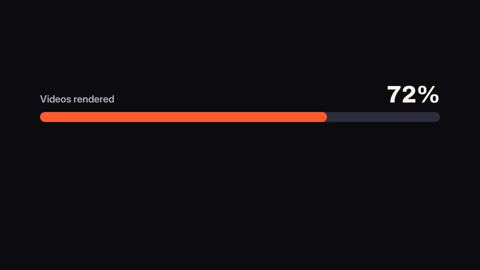
Progress bar
fx:progress-bar
A pill-shaped bar fills from 0 to a value while the number above it counts up in step; use it for one percentage or score that the voice names.
FX.progressBar(H, el, {at, dur = 1.2, value = 72, max = 100, label = '', suffix = '%', decimals = 0, showValue = true, width = 1200, height = 40, color: 'accent', trackColor: 'line'}): builds the bar inside el; the bar fills over `dur` seconds from `at`returns {el, root, label, value, track, fill}
Modern demo · HyperFrames demo · from onda
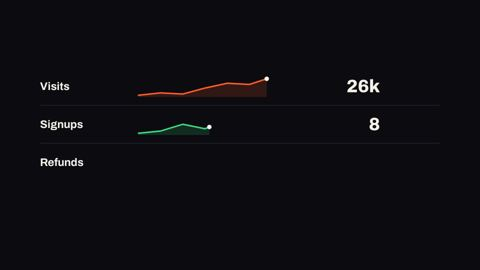
Sparkline row
fx:sparkline-row
A stack of rows, each with a label, a small trend line that draws on, a counting headline value and a change figure; use it for a quick read of several metrics at once.
FX.sparklineRow(H, el, {at, dur = 1.2, rows: [{label, values: [numbers], value?, delta?, unit?, color?}] (3 sample rows), stagger = 0.35, unit = '', decimals = 0, showArea = true, width = 1600, rowHeight = 150, sparkWidth = 560, labelWidth = 340, deltaWidth = 200, color: 'accent', upColor: 'green', downColor: 'accent'}): builds the rows inside el; each line draws over `dur` seconds, row i starts `i * stagger` after `at`returns {el, root, rows}
Modern demo · HyperFrames demo · from remotionui
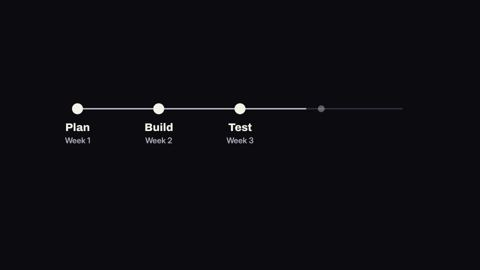
Timeline
fx:timeline
A horizontal timeline: a thin line strokes itself on, dots land at each step as it passes and labels settle beneath, with the last dot in the accent; use it for a sequence of steps or dates.
FX.timeline(H, el, {at, dur = 2.0, points: [{label, sub?}] (5 sample steps), width = 1600, labelWidth = 300, dotSize = 44, lineHeight = 6, color: 'dim', lineColor: 'line', accentColor: 'accent'}): builds the timeline inside el; the line draws over `dur` seconds from `at`returns {el, root, items}
Modern demo · HyperFrames demo · from onda
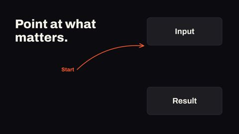
Arrow annotate
fx:arrow-annotate
A hand-drawn arrow draws itself from a point to a target element, with an optional label; use it to tell the viewer where to look.
FX.arrowAnnotate(H, root, {at, dur = 0.8, from: {x, y}, target: el|selector, to: {x, y}, label, labelSize = 44, color: 'accent', strokeWidth = 6, headSize = 38, bow = 0.25, gap = 24, sketch = true, seed = 3, exitAt, exitDur = 0.25}): the arrow is added to root; points are stage px inside rootreturns {svg, from, to}
Modern demo · HyperFrames demo · from remotionui
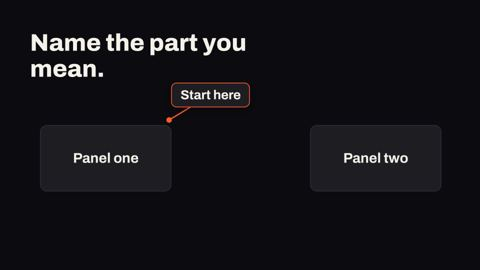
Callout
fx:callout
A label box lands next to one spot, then a line draws from the box to that spot; use it to name a part of the picture.
FX.callout(H, root, {at, label = 'Look here', target: el|selector, x, y, position = 'top-right'|'top-left'|'bottom-right'|'bottom-left', offset = 170, size = 52, color: 'accent', lineWidth = 5, dur = 0.5, lineDelay = 0.3, lineDur = 0.5, margin = 60, gap = 20, exitAt, exitDur = 0.25}): box and line are added to root; x, y and the target are stage px inside rootreturns {el: box, svg, anchor}
Modern demo · HyperFrames demo · from onda
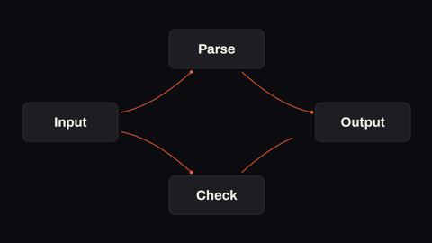
Connector lines
fx:connector-lines
Lines draw between named anchors or boxes, one after the other, with a dot where each one lands; use it for flows, diagrams and relations.
FX.connectorLines(H, root, {at, anchors: [{id, x, y} | {id, el}], edges: [{from, to, shape, bow, color, dot}], shape = 'curve'|'elbow'|'straight', bow = 0.16, color: 'accent', strokeWidth = 4, dashed = false, dot = true, dur = 0.7, stagger = 0.25, gap = 14, exitAt, exitDur = 0.3}): the SVG is added to root, under the boxesreturns {svg, edges}
Modern demo · HyperFrames demo · from remotionui
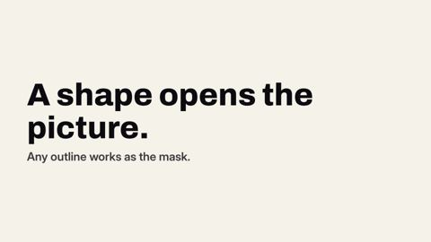
Svg mask reveal
fx:svg-mask-reveal
An SVG shape (circle, star, heart, your own path) grows from a point and uncovers an element; use it for a shape-led reveal of a scene or a picture.
FX.svgMaskReveal(H, el, {at, dur = 1, shape = 'circle'|'diamond'|'square'|'hexagon'|'star'|'plus'|'heart'|'M ... Z' (path on a 0-100 box, absolute M L H V C Q Z), origin: {x: 0.5, y: 0.5}, rotation = 0, bouncy = false, invert = false}): el is clipped by the shape from `at`returns {el}
Modern demo · HyperFrames demo · from remotionui
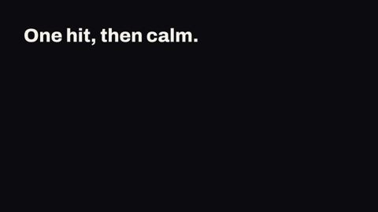
Camera shake
fx:camera-shake
One short shake of the whole scene that fades to rest by itself; use it for an impact, a hit or a slam, not as idle motion.
FX.cameraShake(H, el, {at, dur = 0.6, intensity = 14, rotate = 0.5, rate = 20, decay = 2, seed = 1}): el shakes from `at` for `dur` seconds and then sits stillreturns {el, at, end}
Modern demo · HyperFrames demo · from onda
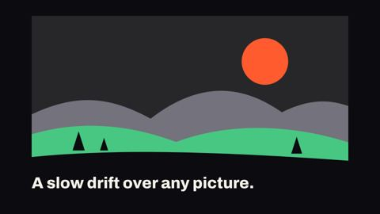
Ken burns
fx:ken-burns
A slow, steady zoom and pan over any element, usually a picture; the documentary move for a still image.
FX.kenBurns(H, el, {at, dur = 5, fromScale = 1, toScale = 1.1, from: {x: 0.5, y: 0.5}, to: {x: 0.5, y: 0.5}, clip = true}): el zooms from `at` for `dur` seconds and then holdsreturns {el, wrap}
Modern demo · HyperFrames demo · from onda
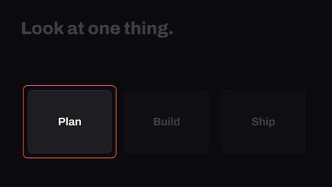
Spotlight
fx:spotlight
Dims everything in an element except one circle or rounded rectangle, with an accent ring on the edge; the light can move on and switch off.
FX.spotlight(H, el, {at, dur = 0.7, shape = 'circle'|'rect', target: el|selector, x, y, r = 200, w = 500, h = 300, radius = 28, pad = 28, dim = 0.78, color: 'cream', ring = true, ringColor: 'accent', moves: [{at, dur = 0.7, target|x,y,r|x,y,w,h}], exitAt, exitDur = 0.5}): a veil is added on top of elreturns {veil, ring}
Modern demo · HyperFrames demo · from onda